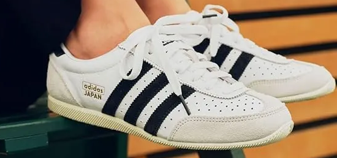
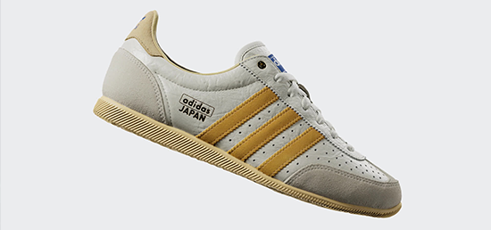
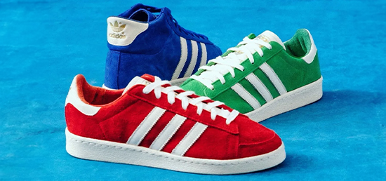
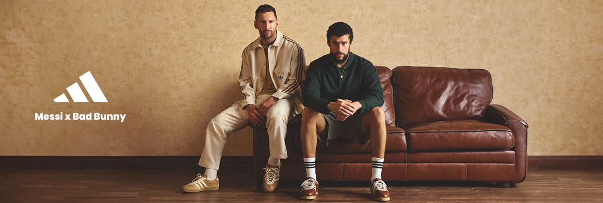
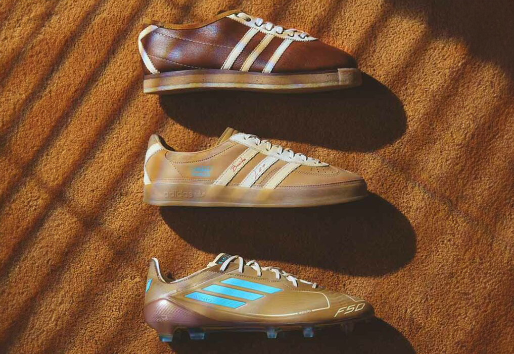
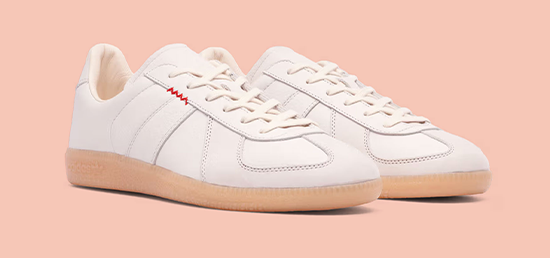
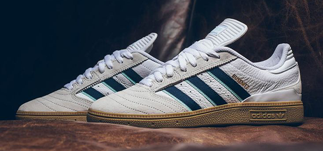
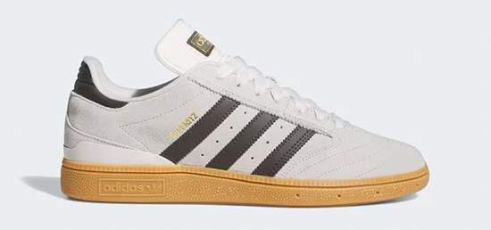

En Adidas son expertos en tendencias y esta vez se han inspirado en la moda asiática para crear un nuevo modelo de calzado que vuelve a ser un éxito de ventas. Se trata de la zapatilla Japan, una nueva apuesta de Adidas que apunta a que se va a convertir en una de las más solicitadas para pedir como regalo de Navidad.
Es un modelo clásico y elegante, inspirado en la cultura japonesa, que combina el estilo retro con la tecnología moderna de Adidas. Presenta un diseño limpio y minimalista, con una estética retro de los años 80. Dispone de un cierre clásico con cordones y combina varios tipos de tejidos que aportan contrate y un toque envejecido.Cuenta con una caña baja, lo que le da un aspecto deportivo y le aporta mucha comodidad. Son perfectas tanto para el día a día como para looks casuales más sofisticados. Tanto para combinar con vaqueros como con pantalones de traje, una tendencia que ha llegado para quedarse.

La Jabbar High se presenta en un atrevido color azul real, mientras que la Jabbar Low recibe un par de versiones especiales en un rojo intenso y en un verde kelly nítido. Los tres modelos presentan un gráfico Tres Bandas de color crema en el mediopié, así como cordones y lengüetas en el talón de color crema.
Confeccionadas en ante de primera calidad, las partes superiores presentan tonos vivos y atrevidos que llaman la atención. Las lengüetas de suave piel y las entresuelas de color blanco crema complementan los vibrantes colores, aportando un toque clásico y lujoso. Los detalles dorados metálicos se incorporan al diseño como tributo al ilustre historial de Jabbar en los campeonatos, añadiendo un toque refinado a la estética deportiva.

La única diferencia real en el esquema de bloques de color de cada par es que la versión de caña alta mantiene su lengüeta tonal, mientras que ambos estilos de corte bajo optan por una lengüeta en contraste. Como toque final, cada par está, por supuesto, estampado con una lámina de oro ilustración de Kareem Abdul-Jabbar lanzando su firma skyhook en la lengua (en un poco de diversión de la historia de zapatillas de deporte, Abdul-Jabbar fue la primera firma de adidas atleta de baloncesto, y también el primer jugador de baloncesto para tener su cara en una zapatilla de deporte).
Las adidas Jabbar Suede pack entan disponibles en nuestra tienda oficial desde el 5 de diciembre. Los modelos de caña baja tienen un precio de unos 100 euros, mientras que la versión de caña alta cuesta 110 euros.

Ahora es Adidas la que apuesta por los dos nombres más potentes de su catálogo en la actualidad. Leo Messi y Bad Bunny se unen en una nueva colección de zapatillas. En concreto, las siluetas destacadas son las míticas Adidas Gazelle y las Adidas F50. Las primeras son un modelo muy reconocible de la marca alemana surgido en 1968, mientras que las segundas son uno de los modelos más usados por el astro argentino en los terrenos de juego.
"Con Bad Bunny x Messi esperamos crear un legado que refleje esta colaboración única, inspirando a las nuevas generaciones a seguir sus pasiones y a trabajar duro para alcanzar sus sueños. Queremos que esta colaboración se convierta en un símbolo de unión para nuestra comunidad latina y para el futuro", ha comentado el artista puertorriqueño. Por su lado, Messi ha asegurado que "la música es algo que me gusta mucho y está presente en varios momentos de mi vida diaria", además de que cree que existe "una conexión especial entre ambos mundos", el de la música y el del fútbol.
Ambas zapatillas están fabricadas en un tono ocre con detalles en blanco y con acentos azul océano. Además, contarán con la firma de los dos protagonistas. Si las quieres deberás estar al loro porque este tipo de uniones suelen agotarse en cuestión de segundos.

El respeto entre Bad Bunny y Messi es evidente. El cantante ha mencionado al futbolista en cinco ocasiones en su último álbum, mientras que Messi ha compartido que incluye siete canciones de Bad Bunny en su lista de reproducción previa a los partidos. Esta conexión ha sido clave para crear una colección que no solo celebra sus trayectorias, sino que también une a los fans del deporte y la música bajo una misma comunidad.
«El apellido de Messi se ha convertido en su propia palabra, un sinónimo de grandeza, valentía y corazón», dijo Benito Martínez Ocasio, «Bad Bunny». «Verlo jugar con la pasión que lo hace es un privilegio. Comparo el amor que siente por su país y su deporte con el amor que siento por la música y por Puerto Rico. Colaborar con él es un honor que muchas personas sueñan, y nunca imaginé que podría lograrlo. Hoy, me siento muy agradecido de poder representar nuestra cultura con el GOAT.»
Después de meses de expectación, Hartcopy ha anunciado que sus adidas BW Army ya están disponibles para pedidos online en Europa y el Reino Unido. Aunque todavía no hay una fecha de lanzamiento global, la página dijo que «las BW Army estarán disponibles en varios minoristas de todo el mundo la semana que viene», en su reciente publicación de Instagram.Hartcopy lanzó una pequeña tirada de las zapatillas a mediados de febrero de este año, pero han estado relativamente callados sobre la próxima reposición hasta ahora.
Tras la buena acogida de su anuncio, Timothy Suen y Sam Le Roy, copropietarios de Hartcopy, han compartido un vistazo más de cerca a su próxima silueta BW Army, producida en colaboración con adidas, así como algunos detalles exclusivos sobre lo que cabe esperar del lanzamiento.

En cuanto al diseño, Le Roy afirma: «Queríamos conservar la forma clásica de las German Army Trainer (GAT), sin desviarnos en absoluto de la suela engomada y la parte superior bicolor. Los únicos retoques que hicimos fueron eliminar la típica puntera en T de ante, en lugar de empujar el nobuk sobre el panel. Originalmente hablamos de materiales más exóticos como lanas, pero el resultado final fue un nobuk realmente mantecoso del que estoy enamorado. Además, colocamos una marca Hartcopy asimétrica en los pies izquierdo y derecho para darle un bonito toque personal».
De las pocas siluetas que han resistido el paso del tiempo, la GAT es única por la cantidad de marcas que han creado su propia interpretación de ella. Mientras que la Replica Sneaker de Maison Margiela es la más conocida en los círculos de la moda -dando lugar a innumerables derivados- adidashas canalizado también su herencia alemana con la BW Army.

Con el auge de la tendencia blokecore en el estilo urbano y casual, la marca Adidas se ha convertido en la principal referencia del sector con diseños como las Samba o las Gazelle, donde ha añadido un nuevo integrante como son estas Busenitz Pro. Una versión de calzado creado en colaboración con el afamado skater alemán, Dennis Busentiz, en el cual se inspira las clásicas Copa Mundial para crear un diseño adaptado a los nuevos gustos de moda actuales.
El primer aspecto de estas Busenitz Pro es el que mejor le define, como es su diseño. Para este, Adidas ha optado por una confección del empeine en compuestos textiles, con zonas con refuerzos sintéticos para un menor desgaste en la zapatilla. Este modelo sigue unas líneas de diseño que se inspira en los grandes clásicos de Adidas de la década de los 70 y 80.
